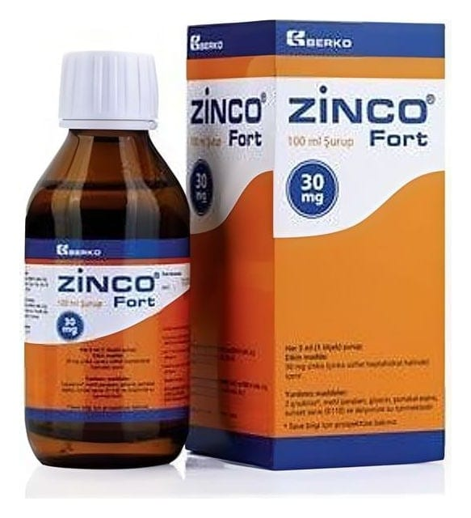

Zinco 30 mg Fort Şurup

Ne için kullanılır
KT · Bölüm 1 ZİNCO FORT, çinko içeren şuruptur. 100 ml’lik amber renkli şişede ve 1 adet 5 ml’lik pipet ile beraber sunulur. Çinko eksikliğinin önlenmesinde ve tedavisinde kullanılır.

ZİNCO FORT, çinko içeren şuruptur. 100 ml’lik amber renkli şişede ve 1 adet 5 ml’lik pipet ile beraber sunulur. Çinko eksikliğinin önlenmesinde ve tedavisinde kullanılır.